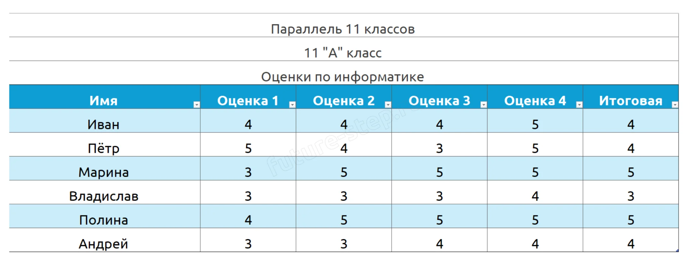
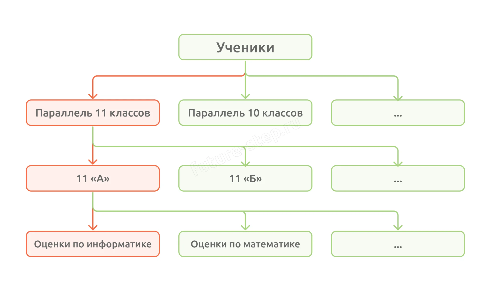
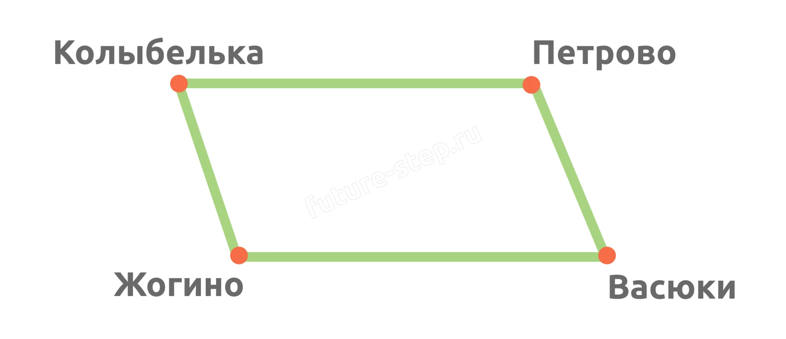
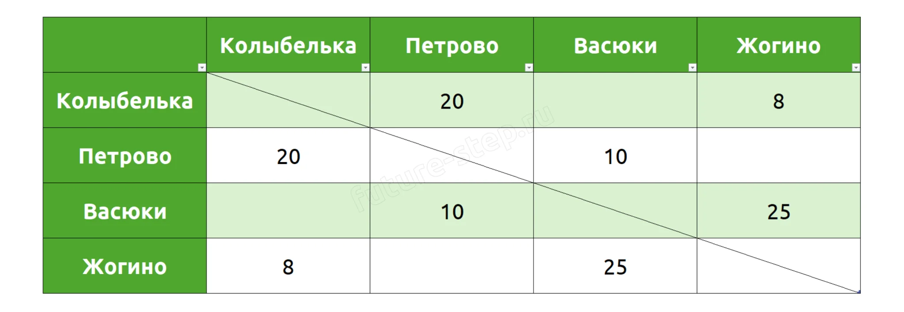
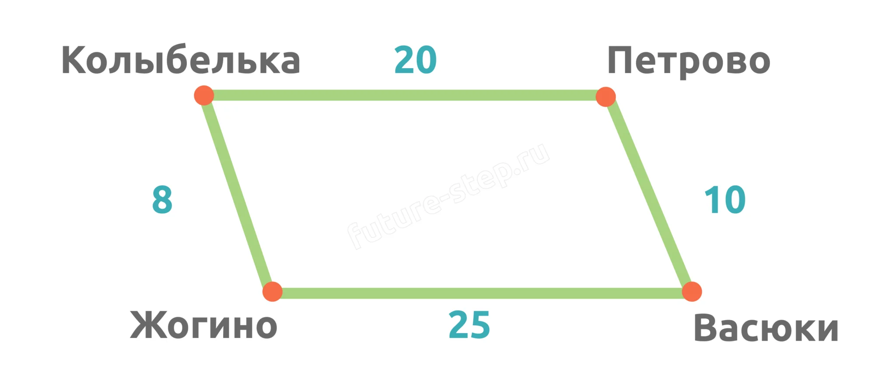
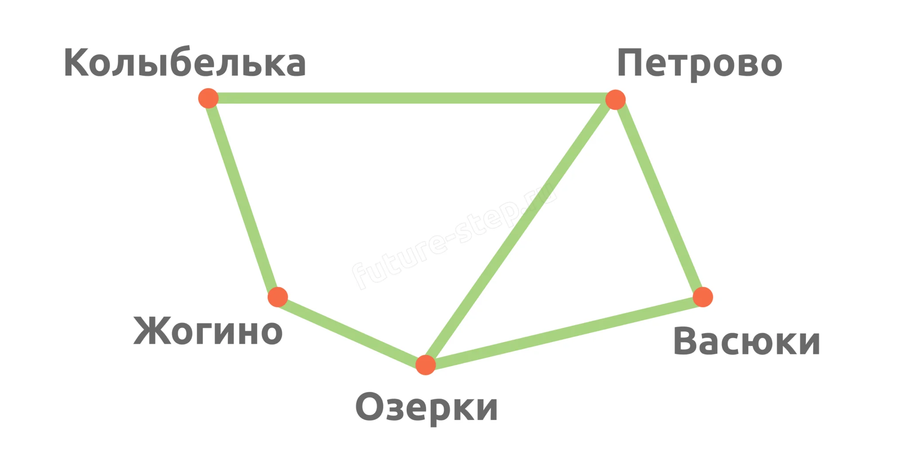

Теория · Графы, таблицы, деревья — учимся читать и анализировать данные
Информационная модель — это упрощённое представление реального объекта, процесса или явления, которое используется для анализа, прогнозирования и принятия решений.
Она позволяет структурировать информацию: выделить ключевые свойства и взаимосвязи, отбросив несущественные детали, и представить данные в удобной для обработки форме.
Представь, что ты — завуч школы. У тебя есть огромный список всех учеников с их оценками по всем предметам. Найти среди этого списка оценки по информатике у 11 «А» класса — задача не из лёгких.
Гораздо удобнее было бы структурировать этот список: разделить учеников по классам, а внутри класса — по предметам. Именно этим и занимаются информационные модели — организуют данные так, чтобы с ними было удобно работать.
Для структурирования информации используются разные способы, и в задании 1 ЕГЭ вам встретятся три основных: таблицы, деревья и графы. Давай разберём каждый из них.
Структура данных, которая представляет информацию в виде строк и столбцов. Каждая строка соответствует отдельному объекту, а каждый столбец — определённому свойству этого объекта.
Вернёмся к примеру со школой. Пусть у нас есть иерархия:
Ученики школы → Параллель 11 классов → 11 «А» класс → Оценки по информатике
Тогда данные об оценках можно представить в виде таблицы:

Таблица — самый привычный и понятный способ организации данных. Но откуда берётся сама иерархия? Как показать, что 11 «А» относится именно к параллели 11-х классов, а не к 10-м? Для этого нужна другая структура — дерево.
Иерархическая структура данных, в которой каждый элемент (узел) имеет одного родителя и может иметь несколько потомков. Самый верхний узел называется корнем, а узлы без потомков — листьями.
Нашу школьную иерархию можно представить в виде дерева:

На схеме оранжевым выделен путь от корня «Ученики» до нужной нам таблицы «Оценки по информатике». Деревья удобны, когда объекты связаны строгой иерархией — каждый элемент находится на своём уровне, и связи между ними предсказуемы.
Но что делать, если отношения между объектами сложные и запутанные? Например, дороги между городами не образуют иерархию — из любого города можно попасть в любой другой. Здесь на помощь приходят графы.
Граф — это математическая абстракция, состоящая из двух компонентов:
Рассмотрим простой граф — схему дорог между четырьмя населёнными пунктами:

Основной элемент графа, представляющий объект или сущность. Вершины могут быть пронумерованы или иметь буквенные метки. На рисунке вершины — это населённые пункты: Колыбелька, Петрово, Васюки и Жогино.
Связь между двумя вершинами. Рёбра бывают:
Количество рёбер, которые выходят из данной вершины. На графе с четырьмя населёнными пунктами степень каждой вершины равна 2.
Дороги между пунктами имеют протяжённость — добавим её к графу. Получится взвешенный граф, где каждому ребру присвоено числовое значение (вес). Веса записывают в весовую матрицу.
Весовая матрица — квадратная матрица, где элемент wij — вес ребра между вершинами i и j. Если ребра нет — 0 или прочерк.


💡 Матрица смежности — похожая таблица, но вместо весов: 1 — ребро есть, 0 — нет. Иногда вместо 1 и 0 — звёздочки.
Между Жогино и Васюками построили Озерки, дорогу в Петрово, а старую дорогу Васюки–Жогино убрали:

📊 Степени вершин: Петрово и Озерки — 3, остальные — 2. Степень вершины — ключевой признак при сопоставлении таблицы и графа.
Этот раздел — для расширения кругозора. В задании 1 ЕГЭ граф маленький (4–8 вершин), и кратчайший путь быстрее и надёжнее найти ручным перебором — просто просмотреть 3–5 возможных маршрутов и сложить длины рёбер. Алгоритм Дейкстры здесь избыточен.
Однако в задачах на графы большего размера (например, задание 27) алгоритм Дейкстры — незаменимый инструмент. Полезно знать, как он устроен.
Алгоритм Дейкстры — алгоритм поиска кратчайшего пути от одной вершины графа до всех остальных. Работает только с неотрицательными весами рёбер.
Идея: на каждом шаге выбираем ближайшую непосещённую вершину и обновляем расстояния до её соседей. Если путь через текущую вершину короче уже известного — запоминаем новый.
1 Инициализация. Для начальной вершины расстояние = 0. Для всех остальных — ∞ (бесконечность). Все вершины помечаются как непосещённые.
2 Выбор ближайшей. Среди непосещённых вершин выбираем ту, расстояние до которой минимально. На первом шаге это начальная вершина (0).
3 Обновление соседей. Для каждого соседа выбранной вершины вычисляем: новое_расстояние = расстояние_до_текущей + вес_ребра. Если это значение меньше уже известного расстояния до соседа — обновляем его.
4 Пометка. Текущую вершину помечаем как посещённую — больше к ней не возвращаемся.
5 Повторение. Если остались непосещённые вершины — возвращаемся к шагу 2. Иначе — алгоритм завершён, кратчайшие расстояния до всех вершин найдены.
💡 Ключевой момент — шаг 3: алгоритм может найти более короткий путь к вершине, которая уже имеет какое-то расстояние. Например, к Васюкам сначала был известен путь длиной 33 (через Жогино), но на следующем шаге через Петрово нашёлся путь длиной 30 — и алгоритм обновил расстояние, выбрав минимум.
Найдём кратчайший путь от Колыбельки до Васюков. Веса: К↔П=20, К↔Ж=8, П↔В=10, Ж↔В=25.
| Шаг | Текущая | Колыбелька | Петрово | Жогино | Васюки |
|---|---|---|---|---|---|
| Старт | — | 0 | ∞ | ∞ | ∞ |
| 1 | Колыбелька | 0 ✓ | 20 | 8 | ∞ |
| 2 | Жогино (8) | ✓ | 20 | 8 ✓ | 33 |
| 3 | Петрово (20) | ✓ | 20 ✓ | ✓ | 30 |
| 4 | Васюки (30) | ✓ | ✓ | ✓ | 30 ✓ |
Результат: кратчайший путь = 30 (через Петрово: 20+10). Через Жогино длиннее: 8+25=33.
На шаге 3 алгоритм сравнил два пути до Васюков: уже известный (33 через Жогино) и новый (30 через Петрово) — и выбрал минимум.
# Функция поиска кратчайших расстояний от start до всех вершин # graph: словарь вида {вершина: [(сосед, вес), ...]} # возвращает: словарь {вершина: кратчайшее_расстояние} def dijkstra(graph, start): # Шаг 1: инициализация — все расстояния = ∞, start = 0 distances = {vertex: float('inf') for vertex in graph} distances[start] = 0 visited = set() # Пока не посетили все вершины while len(visited) < len(graph): # Шаг 2: ближайшая непосещённая вершина current = min( {v: d for v, d in distances.items() if v not in visited}, key=distances.get ) # Шаг 3: обновляем расстояния до соседей for neighbor, weight in graph[current]: if neighbor not in visited: new_dist = distances[current] + weight if new_dist < distances[neighbor]: distances[neighbor] = new_dist # Шаг 4: помечаем текущую как посещённую visited.add(current) return distances
💡 Как использовать: после того как граф построен и веса определены, функция dijkstra(graph, 'A') вернёт кратчайшие расстояния от вершины A до всех остальных. До нужной вершины — просто берём значение по ключу.
# Пример: граф из четырёх городов graph = { 'Колыбелька': [('Петрово', 20), ('Жогино', 8)], 'Петрово': [('Колыбелька', 20), ('Васюки', 10)], 'Жогино': [('Колыбелька', 8), ('Васюки', 25)], 'Васюки': [('Петрово', 10), ('Жогино', 25)] } distances = dijkstra(graph, 'Колыбелька') print(distances['Васюки']) # 30